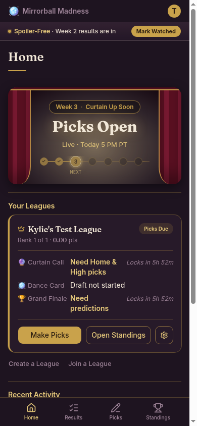

2 · After Mark Watched — Mid West · SF on · ENABLED
Left: Mark Watched is ENABLED (episode done for West air — not grayed).
Right: full Home caught up · published scores unlock.
Scores Are Going Live
Live Now · West Coast
Curtain · Live Now (PT)
SF Mode ON
Mark Watched ENABLED
Published · no drafts
Left · PromptMark Watched ENABLED

Spoiler-Free · Week 3 posting live
Mark Watched
Week 3 · Live Now (PT)
West Coast is watching
Official scores · Spoilers can wait
Live Now · West Coast
Scores Are Going Live
i
×
Week 3 judges' scores are going up.
Follow live, catch up fully, or stay blind.
Spoiler-Free Mode
Hide results until you mark a week as watched
Stay Updated — I'm Watching Live
Follow along as official scores post
Mark Watched — I've Finished It
You’re caught up · scores unlock
Dismiss
Right · Home aftercaught up · scores unlock
Week 3 · Live Now (PT)
West Coast is watching
You’re caught up · scores unlock
Your Leagues
♛Kylie's Test League
Rank 1 of 1 · 0.00 pts
Caught up
Curtain CallPicks locked
Dance CardScores unlocked · published
Grand FinaleResults visible
View Scores
Open Standings
⚙
Create a LeagueJoin a League